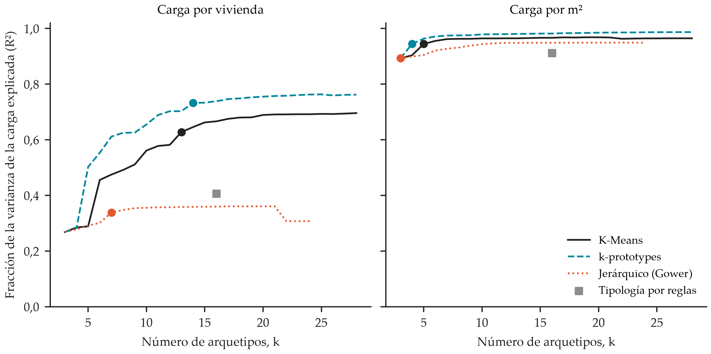
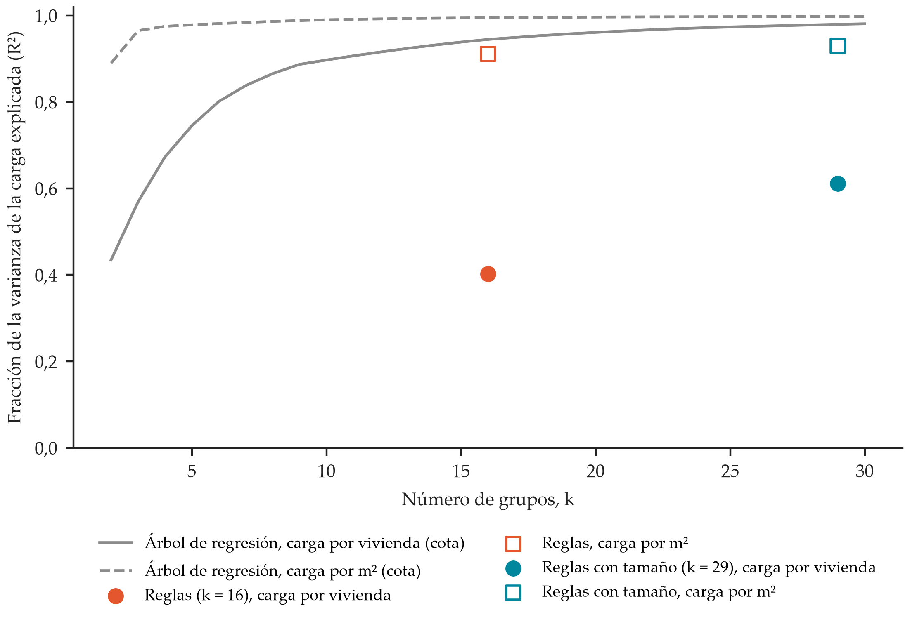
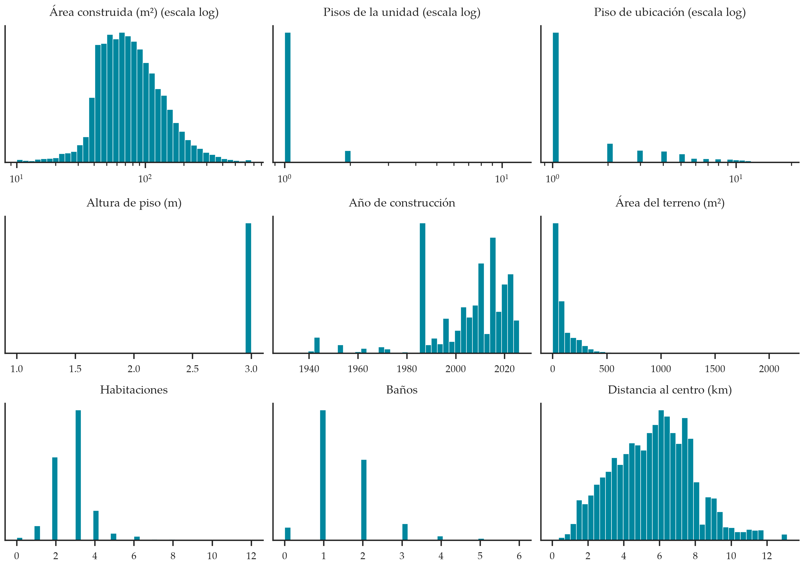
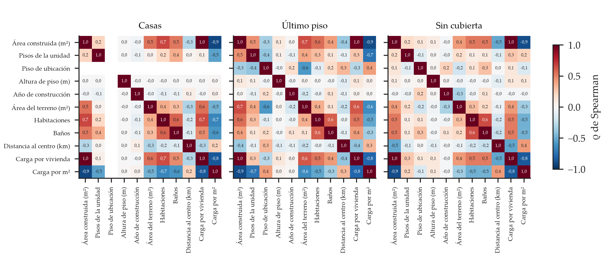
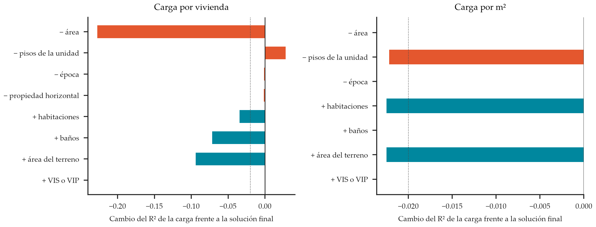
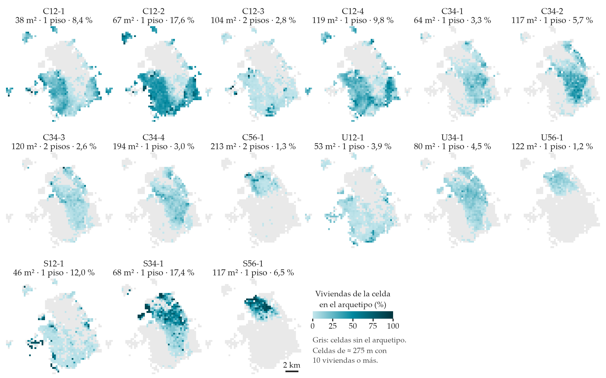
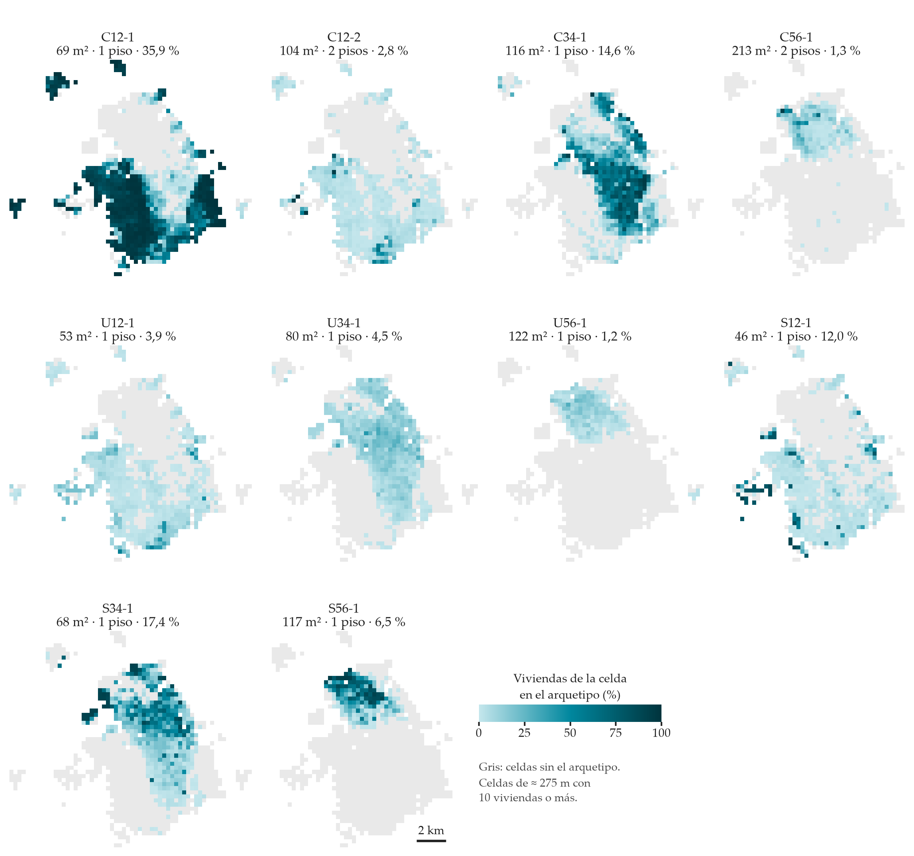
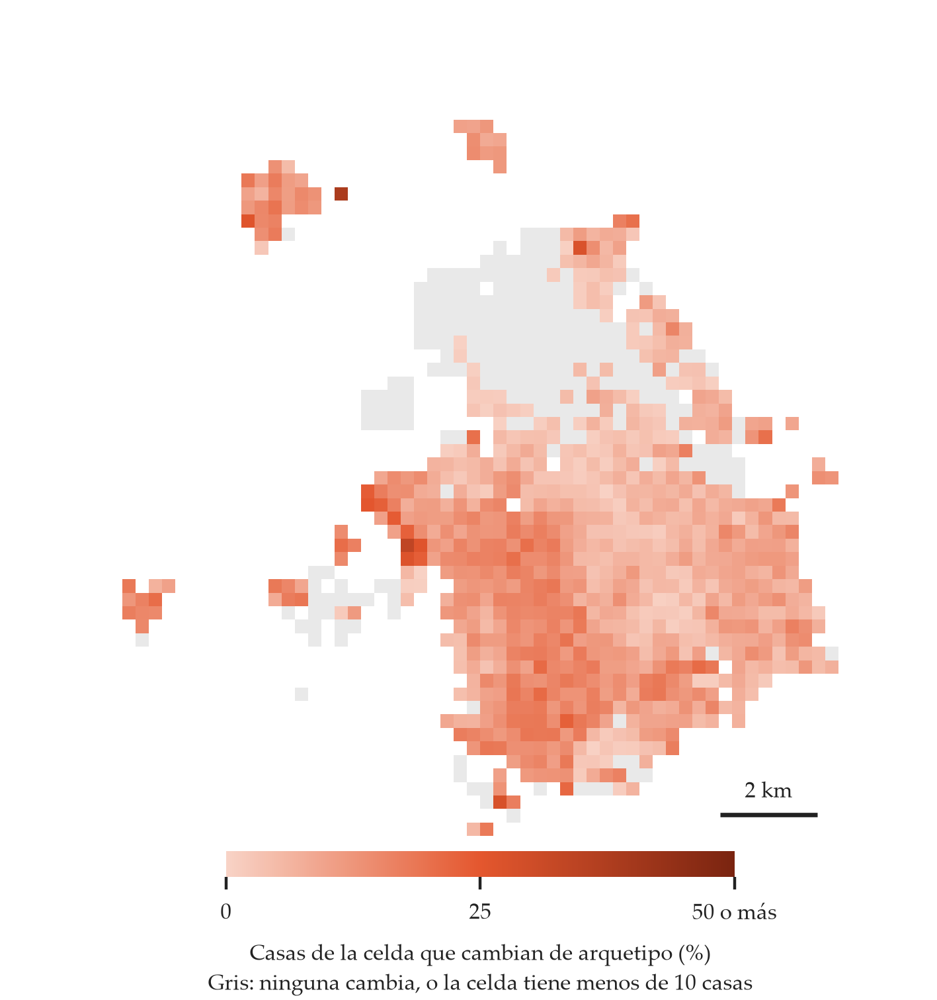
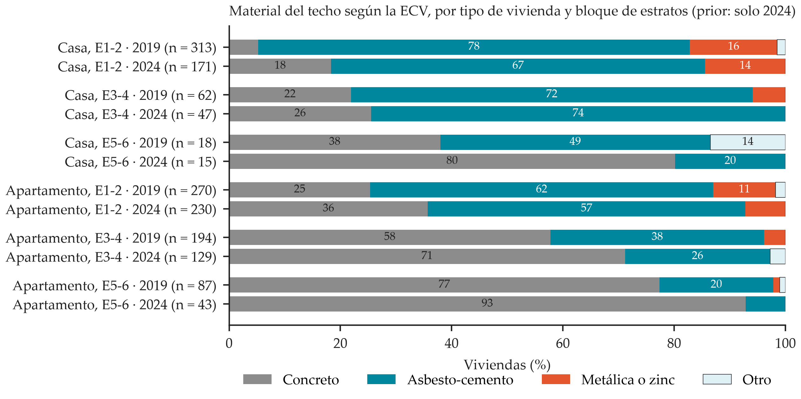
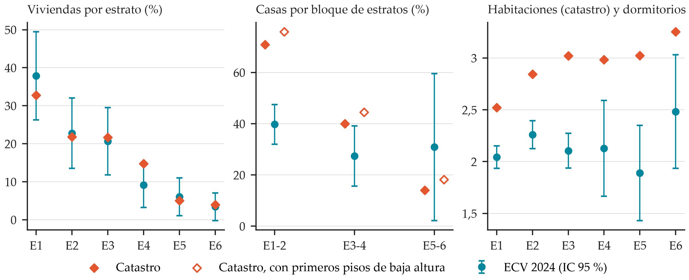

Arquetipos de vivienda (Fase 1)#
La Fase 1 de la tesis caracteriza los arquetipos de vivienda de Barranquilla a partir del catastro y asigna cada una de
las 332.718 viviendas a un arquetipo (Alcaldía de Barranquilla, Gerencia de Gestión Catastral, 2026). Cada arquetipo reúne viviendas de geometría y posición
parecidas, y por eso con un índice de carga parecido, y lleva sus priors de envolvente, sus atributos del hogar y su
ficha. Este capítulo resume
el método y los resultados; el código, el preregistro, las tablas completas y las fichas están en la carpeta
arquetipos/ del repositorio.
La tesis se organiza en tres fases que siguen los objetivos de la propuesta. Esta primera fase define qué tipos de vivienda hay en la ciudad, cuántas viviendas tiene cada uno y dónde están, y entrega para cada arquetipo su geometría, su posición frente a la cubierta y los priors de su envolvente. La Fase 2 toma esos arquetipos como la población que se simula, con el clima, la tenencia y el uso del aire acondicionado, para obtener los perfiles horarios de carga de cada tipo de vivienda. La Fase 3 compara el modelo con el consumo y la demanda observados.
Nota
Estado (20 de noviembre de 2026). Los siete pasos están hechos con las dos medidas de carga del Paso 3: por vivienda, como está escrito en la propuesta (15 arquetipos), y por m² (10 arquetipos). Las cifras son las de la corrida con el código corregido después de la verificación (Verificación y correcciones). La elección entre las dos está pendiente; mientras tanto aplica la carga por vivienda. Todos los productos existen para las dos soluciones. Una variante del agrupamiento con cuatro variables más del catastro explica menos varianza de la carga en las dos medidas y queda como análisis complementario (Tabla 19).
Datos y variables#
Cada vivienda del catastro trae su área construida, el número de pisos de la unidad, el piso en que está, el año de construcción, el uso, la condición de propiedad horizontal y el estrato. Con ellos se definen cuatro variables:
Posición frente a la cubierta: casa (suelo y techo propios), último piso (techo expuesto en un edificio) o sin cubierta (otra vivienda encima, incluido el primer piso con vivienda encima). Es la variable que más pesa en la carga, porque el techo es la principal ganancia de calor. Una vivienda tiene el techo expuesto si su último piso es el más alto de su torre, identificada con los 24 primeros dígitos del número predial (predio matriz y número de torre). Si además empieza en el primer piso es casa, y si no, último piso.
Tipo de edificio: baja altura (hasta 3 pisos) o multifamiliar (4 pisos o más), según el uso catastral.
Época: antes de 1990, de 1990 a 2009, y 2010 o después.
Bloque de estratos: 1-2, 3-4 y 5-6.
Método#
Paso |
Qué se hace |
Regla principal |
Scripts |
|---|---|---|---|
1. Datos |
Catastro depurado, una fila por vivienda, con la posición frente a la cubierta, la época y el bloque de estratos |
Los valores imposibles quedan como faltantes; la época faltante toma la más frecuente de su tipo, posición y bloque |
|
2. Agrupamiento |
K-Means, k-prototypes y jerárquico con distancia de Gower, ajustados en una submuestra de 10.293 edificios (una vivienda por edificio en cada posición) y aplicados después a las 332.718 viviendas |
Se agrupa por separado dentro de cada posición frente a la cubierta; DBSCAN aparta los atípicos del ajuste; el R² se calcula con todas las viviendas |
|
3. Número de arquetipos |
Carga anual simplificada con envolvente común |
El menor número de grupos a partir del cual ningún grupo adicional sube en 0,02 la varianza de la carga explicada (R²) |
|
4. Papel del estrato |
Diseño plano (por posición) frente a anidado (por posición × bloque) |
Anidado si el estrato explica al menos el 6 % de la varianza que queda dentro de los grupos |
|
5. Asignación |
Árbol de decisión y Random Forest que resumen la regla de asignación |
Fidelidad medida en 7 bloques de prueba de 2 km; la incertidumbre sale de repetir el agrupamiento en 100 submuestras |
|
6. Envolvente |
Materiales de la ECV, transmitancias de la ISO 6946 y valores de CEELA |
Priors con su incertidumbre, no valores únicos |
|
7. Hogar y validación |
Atributos del hogar de la ECV, representatividad y sensibilidad |
Una ficha por arquetipo |
|
Robustez y verificación |
Clima de GDEX, techo propio por vivienda, todos los edificios en lugar de la submuestra, mapas y comprobaciones automáticas |
Ninguna prueba cambia las reglas |
|
Carga del Paso 3. Es un índice anual de carga térmica de enfriamiento: carga sensible por cubierta y muros con la temperatura sol-aire, por ventanas e infiltración, y carga latente por infiltración, con una consigna de 26,5 °C y 60 % de humedad relativa, el clima horario de ERA5-Land de 2015 a 2025 (Muñoz-Sabater et al., 2021, Zippenfeld, 2023) y la misma envolvente para todas las viviendas, de modo que las diferencias vengan de la geometría y la posición. No es la carga simulada de la Fase 2.
Agrupamiento. Los algoritmos se ajustan en una submuestra con una vivienda al azar por edificio dentro de cada posición (4.074 casas, 3.139 últimos pisos y 3.080 sin cubierta), estratificada por tipo y bloque con un mínimo de 150 edificios por estrato. Así un edificio con cientos de apartamentos no pesa más que una casa, y la distancia de Gower, que crece con el cuadrado del número de puntos, sigue siendo calculable. Después, cada una de las 332.718 viviendas se asigna al centroide, prototipo o medoide más cercano de su posición, y el R² de la carga se mide sobre todas. Las variables son el área, los pisos de la unidad y el piso del edificio (en logaritmo), la época, el tipo y la propiedad horizontal. k-prototypes maneja a la vez las variables numéricas y las categóricas (Huang, 1998), y el jerárquico usa la distancia de Gower (Gower, 1971). Para cada número total de grupos se toma la mejor combinación entre estratos, y se elige el menor a partir del cual ninguna ganancia llega a 0,02. Entre los algoritmos se queda el de mayor R² entre los estables, con los umbrales de Hennig (Hennig, 2007): Jaccard ponderado de al menos 0,75 en 100 submuestras del 80 % y ningún grupo grande por debajo de 0,6. Agrupar por propiedades del edificio y evaluar con el indicador energético es un enfoque con precedentes (Dahlström et al., 2024, De Jaeger et al., 2020).
Envolvente. El material del techo, las paredes y los pisos sale de la ECV 2024 por bloque de estratos y por casa o apartamento (DANE, 2026). Antes de juntar olas se probó con la corrección de Rao y Scott si cambiaban entre 2019 y 2024 (Rao y Scott, 1981): cambian en las casas de los estratos 1 y 2, así que se usa solo 2024. Cada material se traduce a transmitancia con la ISO 6946 (ISO, 2017), a capacidad con las clases de masa de la ISO 13790 (ISO, 2008), y las ventanas, la sombra y la zona climatizada parten de CEELA (UPME et al., 2025a, UPME et al., 2025b). La infiltración con las ventanas cerradas es lognormal (Nazaroff, 2021), con anclas medidas en clima cálido y en Brasil (Mathur y Damle, 2021, Rodrigues et al., 2021). El factor de sombra de 0,75 coincide con el de Lombardi et al. (2019).
Las dos soluciones#
Carga por vivienda |
Carga por m² |
|
|---|---|---|
Arquetipos |
15 |
10 |
Algoritmo elegido |
k-prototypes |
K-Means |
Varianza de la carga explicada (R²) |
0,63 |
0,93 |
Estabilidad (Jaccard ponderado) |
0,98 |
1,00 |
Silueta |
0,16 |
0,51 |
Árbol que resume la asignación |
42 reglas; reproduce el 99,7 % de las asignaciones |
10 reglas; reproduce el 100 % |
Qué separa, además de la posición y el bloque |
las casas de los estratos 1 a 4 por tamaño |
las casas de los estratos 1 y 2 de un piso o de dos o más |
Como referencia, la sola partición por posición y bloque de estratos (9 grupos) explica 0,40 de la varianza por vivienda y 0,90 por m², y la tipología por reglas (tipo × posición × época × bloque, 16 tipos), 0,40 y 0,91. El agrupamiento suma, entonces, 0,23 por vivienda y 0,02 por m². El estrato explica entre el 12 y el 18 % de la varianza que queda dentro de los grupos del diseño plano, por encima del umbral de 6 %, así que en las dos medidas se adoptó el diseño anidado.
La carga del Paso 3 usa la misma envolvente para todas las viviendas, así que solo depende del área, los pisos de la unidad, la altura y la posición; la época, el tipo, la propiedad horizontal y el estrato no entran en ella. Por eso el R² solo premia las divisiones por tamaño y pisos, y los arquetipos son clases geométricas: la diversidad de la envolvente entra por los priors del Paso 6, no por los arquetipos. Del mismo modo, lo que mide el estrato dentro de los grupos son diferencias de geometría entre estratos.
La diferencia entre las dos medidas tiene una causa clara: la varianza de la carga por vivienda la dominan muy pocas viviendas grandes (las de 300 m² o más son el 1,8 % de la ciudad y aportan el 37 % de la varianza), y por eso esa solución separa sobre todo tamaños. Con la carga por m², los arquetipos quedan definidos por la posición y el bloque. Qué medida conviene depende de cómo tome el área la simulación de la Fase 2, y los arquetipos deben seguir el uso que se les dé (Pasichnyi et al., 2019).


Figura 33 Varianza de la carga explicada según el número de arquetipos, en el diseño plano (agrupamiento dentro de cada posición). Los puntos marcan el número elegido para cada algoritmo; el cuadrado gris, la tipología por reglas.#


Figura 34 Cota de referencia: varianza explicada por un árbol de regresión con k hojas, frente a las tipologías por reglas.#
Arquetipos con la carga por m²#
Arquetipo |
Viviendas (% de la ciudad) |
Área mediana, m² (P25–P75) |
Carga mediana, kWh/m²·año |
Techo de concreto |
Fracción climatizada |
Infiltración, ren/h |
Hogares con A/C |
|---|---|---|---|---|---|---|---|
C12-1 |
119.477 (35,9 %) |
69 (51–96) |
522 |
18 % |
0,18 |
2,07 |
22 % |
C12-2 |
9.168 (2,8 %) |
104 (65–140) |
382 |
18 % |
0,14 |
2,11 |
26 % |
C34-1 |
48.436 (14,6 %) |
116 (85–160) |
499 |
26 % |
0,11 |
1,98 |
53 % |
C56-1 |
4.223 (1,3 %) |
213 (153–304) |
389 |
72 % |
0,90 |
1,34 |
87 % |
S12-1 |
39.976 (12,0 %) |
46 (42–56) |
236 |
no expuesto |
0,23 |
0,96 |
16 % |
S34-1 |
57.711 (17,4 %) |
68 (53–86) |
219 |
no expuesto |
0,31 |
0,97 |
64 % |
S56-1 |
21.742 (6,5 %) |
117 (85–161) |
199 |
no expuesto |
0,90 |
0,95 |
90 % |
U12-1 |
12.857 (3,9 %) |
53 (42–100) |
533 |
71 % |
0,18 |
1,36 |
21 % |
U34-1 |
15.043 (4,5 %) |
80 (61–110) |
514 |
86 % |
0,26 |
1,15 |
61 % |
U56-1 |
4.085 (1,2 %) |
122 (92–190) |
497 |
98 % |
0,90 |
0,97 |
88 % |
C12-2 agrupa las casas de estratos 1 y 2 de dos pisos o más. Las viviendas con techo expuesto (casa y último piso) tienen más del doble de carga por m² que las que tienen otra vivienda encima.
Arquetipos con la carga por vivienda#
Arquetipo |
Posición |
Estratos |
Viviendas (% de la ciudad) |
Área mediana, m² (P25–P75) |
Pisos de la unidad |
Carga mediana, MWh/año |
|---|---|---|---|---|---|---|
C12-1 |
Casa |
1-2 |
28.065 (8,4 %) |
38 (30–44) |
1 |
21,0 |
C12-2 |
Casa |
1-2 |
58.631 (17,6 %) |
67 (60–78) |
1 |
35,1 |
C12-3 |
Casa |
1-2 |
9.168 (2,8 %) |
104 (65–140) |
2 |
39,8 |
C12-4 |
Casa |
1-2 |
32.781 (9,8 %) |
119 (104–146) |
1 |
59,8 |
C34-1 |
Casa |
3-4 |
10.929 (3,3 %) |
64 (48–76) |
1 |
33,6 |
C34-2 |
Casa |
3-4 |
18.914 (5,7 %) |
117 (102–135) |
1 |
58,8 |
C34-3 |
Casa |
3-4 |
8.526 (2,6 %) |
120 (94–185) |
2 |
44,8 |
C34-4 |
Casa |
3-4 |
10.067 (3,0 %) |
194 (172–240) |
1 |
94,7 |
C56-1 |
Casa |
5-6 |
4.223 (1,3 %) |
213 (153–304) |
2 |
91,0 |
S12-1 |
Sin cubierta |
1-2 |
39.976 (12,0 %) |
46 (42–56) |
1 |
10,8 |
S34-1 |
Sin cubierta |
3-4 |
57.711 (17,4 %) |
68 (53–86) |
1 |
14,9 |
S56-1 |
Sin cubierta |
5-6 |
21.742 (6,5 %) |
117 (85–161) |
1 |
23,4 |
U12-1 |
Último piso |
1-2 |
12.857 (3,9 %) |
53 (42–100) |
1 |
27,8 |
U34-1 |
Último piso |
3-4 |
15.043 (4,5 %) |
80 (61–110) |
1 |
39,4 |
U56-1 |
Último piso |
5-6 |
4.085 (1,2 %) |
122 (92–190) |
1 |
57,4 |
Variante con más variables del catastro#
Además de las seis variables de la propuesta, el catastro trae el número de habitaciones y de baños, el área del terreno y la condición de vivienda de interés social o prioritario. Se repitió el agrupamiento completo con esas cuatro variables agregadas (las tres primeras en logaritmo), con la misma submuestra y las mismas reglas. La regla que descarta las variables casi constantes deja la condición de VIS o VIP solo en las viviendas sin cubierta y de último piso de los estratos 1 y 2: en los demás estratos, menos del 1 % de los edificios de la submuestra son VIS o VIP. La destinación y el tipo de planta son constantes, la altura de piso vale 3,0 m en el 99,7 % de las viviendas, y la ubicación queda fuera porque el arquetipo describe la vivienda y no su lugar. La regla para elegir entre las dos variantes se fijó antes de correr la nueva: entre las soluciones estables, la de mayor R² de la carga; con un empate de menos de 0,02, la de menos grupos.
Carga |
Variables |
Algoritmo |
Arquetipos |
Grupos de casas |
R² |
Jaccard ponderado |
Silueta |
Concordancia |
|---|---|---|---|---|---|---|---|---|
Por vivienda |
Seis (final) |
k-prototypes |
15 |
4, 4 y 1 |
0,63 |
0,98 |
0,16 |
|
Por vivienda |
Diez |
K-Means |
11 |
2, 2 y 1 |
0,51 |
0,98 |
0,23 |
0,66 |
Por m² |
Seis (final) |
K-Means |
10 |
2, 1 y 1 |
0,93 |
1,00 |
0,51 |
|
Por m² |
Diez |
K-Means |
9 |
1, 1 y 1 |
0,90 |
1,00 |
no definida |
0,94 |
Las dos variantes son estables y la de seis variables explica más varianza en las dos medidas, así que sigue siendo la solución final y los arquetipos no cambian. La carga del Paso 3 depende solo de la geometría (área y pisos) y de la posición, y las variables agregadas no entran en ella. Con diez variables la distancia reparte su peso entre ellas: por vivienda, las casas de los estratos 1 a 4 se dividen solo en pequeñas y grandes, y ningún grupo adicional sube el R² en 0,02; por m², las casas de los estratos 1 y 2 de dos pisos o más ya no se separan de las de un piso. Con este criterio, una variable que no entra en la carga no puede subir el R², así que el resultado no dice si las habitaciones o los baños importan para la ocupación o los equipos de la Fase 2.
Análisis de las variables del catastro#
Esta sección explica por qué los arquetipos usan seis variables del catastro y no otras. Sigue el esquema del análisis exploratorio del trabajo previo de predicción del estrato (Cantillo Orozco y Oñoro Araujo, 2026), con un análisis univariado, uno bivariado y uno multivariado, y termina con los usos de las variables que no entran en los arquetipos. El análisis se escribió en el preregistro antes de correrlo (Nota 14, análisis complementario A13), usa las 332.718 viviendas salvo donde se indica y no cambia la solución final (script 20).
Las respuestas son las dos medidas de carga del Paso 3, por vivienda y por m². Como esa carga se calcula con una envolvente común y solo depende del área, el número de pisos, la altura de piso y la posición frente a la cubierta, el análisis responde a una pregunta precisa: qué variables del catastro describen la geometría que mueve el calor y cuáles describen otra cosa.
Análisis univariado#
Variable |
Rol |
Faltantes |
Ceros |
Mediana (p25 a p75) |
p1 a p99 |
Asimetría |
Con logaritmo |
|---|---|---|---|---|---|---|---|
Área construida (m²) |
Base |
0 % |
0 % |
73 (51 a 110) |
19 a 356 |
4,06 |
0,34 |
Pisos de la unidad |
Base |
0 % |
0 % |
1 (1 a 1) |
1 a 4 |
11,22 |
5,23 |
Piso de ubicación |
Base |
0,1 % |
0 % |
1 (1 a 3) |
1 a 14 |
2,65 |
1,43 |
Año de construcción |
Base, como época |
0 % |
0 % |
2010 (1996 a 2017) |
1942 a 2025 |
−1,51 |
|
Altura de piso (m) |
Solo carga |
0 % |
0 % |
3,0 (3,0 a 3,0) |
3,0 a 3,0 |
||
Área del terreno (m²) |
Variante ampliada |
0 % |
16,1 % |
49 (23 a 118) |
0 a 506 |
59,35 |
−0,95 |
Habitaciones |
Variante ampliada |
0,1 % |
0,9 % |
3 (2 a 3) |
1 a 6 |
2,16 |
−0,65 |
Baños |
Variante ampliada |
0 % |
5,2 % |
1 (1 a 2) |
0 a 4 |
1,75 |
−0,13 |
Distancia al centro (km) |
No entra |
3,1 % |
0 % |
5,7 (4,0 a 7,2) |
1,3 a 11,4 |
0,21 |


Figura 35 Distribución de las variables numéricas del catastro en las 332.718 viviendas. Las de asimetría mayor que 2 van en escala logarítmica y todas se cortan en el percentil 99,9.#
El área construida tiene una cola larga hacia las viviendas grandes, y el logaritmo la deja casi simétrica (asimetría de 4,06 a 0,34). Por eso entra en logaritmo, igual que el número de pisos y el piso de ubicación. Estas dos son casi discretas y se concentran en 1, porque el 54,5 % de las viviendas son casas. La altura de piso vale 3,0 m en más del 99 % de las viviendas, así que no puede separar grupos y solo entra en el volumen de la carga. El año de construcción tiene picos en 1986, 2014 y 2022, que parecen años de inscripción más que de construcción (limitación 4), y por eso entra como época de tres niveles y no como año. Entre las variables de la variante ampliada, el área del terreno vale cero en el 16,1 % de las viviendas y tiene una cola de lotes enormes (hasta 36.022 m²), lo que la hace la menos confiable. Las habitaciones y los baños son conteos pequeños, con medianas de 3 y 1.
Entre las categóricas, la posición frente a la cubierta es casa en el 54,5 % de las viviendas, el tipo de edificio es
de baja altura en el 64,1 %, la época 2010 o después en el 57,1 % y el predio no está en propiedad horizontal en el
55,2 %. Solo el 8,3 % de las viviendas es VIS o VIP. El uso catastral, la condición del predio y el tipo de vivienda
no entran como tales porque definen el tipo de edificio, la propiedad horizontal y la condición de VIS o VIP, y su V de
Cramér con ellas es de 1,0 (var_cramer.csv).
Análisis bivariado#


Figura 36 Correlación de Spearman entre las variables numéricas del catastro y las dos medidas de carga, por posición frente a la cubierta. En las casas el piso de ubicación es siempre 1 y no tiene correlación definida.#
En las casas, la carga por vivienda sigue casi exactamente al área (ρ = 0,99), y la carga por m² baja con ella (ρ = −0,91), porque las casas grandes reparten la cubierta en más área o en más pisos. Las habitaciones, los baños y el área del terreno también se relacionan con la carga (ρ de 0,65, 0,48 y 0,55 en las casas), pero lo hacen a través del tamaño: su correlación con el área es de 0,7, 0,5 y 0,5. La distancia al centro tiene una relación débil y negativa con la carga por vivienda (ρ = −0,29), porque las viviendas de la periferia son más pequeñas.
Variable |
η² carga por vivienda |
η² carga por m² |
|---|---|---|
Posición frente a la cubierta |
0,26 |
0,89 |
Uso catastral |
0,20 |
0,54 |
Tipo de edificio |
0,18 |
0,50 |
Propiedad horizontal |
0,18 |
0,49 |
Estrato |
0,04 |
0,22 |
Bloque de estratos |
0,01 |
0,18 |
VIS o VIP |
0,06 |
0,07 |
Época |
0,02 |
0,04 |
La posición frente a la cubierta explica por sí sola el 89 % de la varianza de la carga por m², y por eso es el primer
nivel del diseño anidado. El tipo de edificio y la propiedad horizontal explican la mitad, pero en buena parte por su
relación con la posición (V de Cramér de 0,83 y 0,82). La época casi no se asocia con la carga, lo que es esperable
porque la envolvente común no cambia con la edad de la vivienda. La información mutua ordena las variables de forma
parecida (var_vs_carga.csv), con una excepción: la de la distancia al centro es alta (1,39)
aunque su correlación es baja, porque las viviendas de un mismo edificio comparten la ubicación y la carga, y el
estimador reconoce el edificio, no un efecto de la ubicación.
Ninguna variable numérica tiene un VIF mayor que 2,3 en ninguna posición (var_vif.csv), así que
no hay multicolinealidad que obligue a descartar alguna. Las variables de la variante ampliada no sobran por repetir a
las demás, sino por lo que muestra el análisis multivariado.
Análisis multivariado#
Las seis variables base explican entre el 26 % y el 42 % de la varianza de las habitaciones, entre el 33 % y el 42 % de
la de los baños, entre el 16 % y el 48 % de la del área del terreno y hasta el 21 % de la condición de VIS o VIP, según
la posición (var_redundancia.csv). Ninguna llega al 50 % fijado como criterio de
redundancia, así que cada una trae información propia. En el PCA de las casas, el primer componente (43 % de la
varianza) pesa casi por igual el área, las habitaciones y los baños, y algo menos el área del terreno, y el segundo y el tercero son
el año y el número de pisos (var_pca.csv). Es decir, las habitaciones y los baños forman con el
área un mismo eje de tamaño, y lo que tienen de propio no es geometría.
Para saber si esa información propia mejora los arquetipos se repitió la solución final agregando una sola variable a las seis base, con el mismo algoritmo, submuestra, k y semilla, y se comparó con el efecto de quitar cada variable base (script 08).


Figura 37 Cambio del R² de la carga al quitar una variable base (coral) o agregar una de la variante ampliada (turquesa), con el mismo algoritmo, submuestra, k y semilla de la solución final. La línea punteada es la caída de 0,02 que la sensibilidad del Paso 7 considera importante. Las variables sin barra no cambian los grupos.#
Carga |
Variable agregada |
R² |
Cambio del R² |
Rand |
Viviendas que cambian de arquetipo |
|---|---|---|---|---|---|
Por vivienda |
Ninguna (control) |
0,630 |
1,00 |
0 % |
|
Por vivienda |
Habitaciones |
0,595 |
−0,035 |
0,88 |
6,7 % |
Por vivienda |
Baños |
0,558 |
−0,072 |
0,78 |
14,1 % |
Por vivienda |
Área del terreno |
0,536 |
−0,094 |
0,73 |
19,2 % |
Por vivienda |
VIS o VIP |
0,630 |
0 |
1,00 |
0 % |
Por m² |
Ninguna (control) |
0,926 |
1,00 |
0 % |
|
Por m² |
Habitaciones |
0,904 |
−0,023 |
0,94 |
2,8 % |
Por m² |
Baños |
0,926 |
0 |
1,00 |
0 % |
Por m² |
Área del terreno |
0,904 |
−0,023 |
0,94 |
2,8 % |
Por m² |
VIS o VIP |
0,926 |
0 |
1,00 |
0 % |
Cada variable que se agrega cambia los arquetipos y empeora la separación de la carga. En la solución por vivienda, el área del terreno mueve al 19 % de las viviendas y baja el R² en 0,094, los baños mueven al 14 % y lo bajan en 0,072, y las habitaciones mueven al 7 % y lo bajan en 0,035. Las tres pasan el umbral de la sensibilidad del Paso 7. En la de por m², las habitaciones y el área del terreno borran la separación entre las casas de uno y de dos pisos de los estratos 1 y 2, que es lo que distingue a C12-2, y por eso el 2,8 % que cambia son justamente esas casas. La condición de VIS o VIP no cambia nada, porque en las casas, que son las únicas posiciones con más de un grupo, casi no hay VIS o VIP y la regla de las variables casi constantes la descarta.
Quitar una variable base es la prueba inversa. Sin el área, la solución por vivienda pierde 0,228 de R². Sin el número de pisos, la de por m² pierde 0,022, porque es la variable que separa las casas de dos pisos. Sin la época o la propiedad horizontal casi nada cambia, y sin el número de pisos la solución por vivienda incluso sube 0,028 de R², porque libera a k-prototypes para cortar solo por tamaño. La época y la propiedad horizontal quedan porque están en la propuesta y porque describen la construcción, no porque separen la carga del Paso 3, y sus efectos sobre la envolvente entran en la Fase 2.
Variables que no entran en los arquetipos#
Las variables que no describen la geometría de la envolvente sí tienen un lugar en el modelo, fuera de los arquetipos.
Habitaciones. Definen cuánta área se climatiza. En los apartamentos de 3-4, el número de habitaciones del catastro, llevado a los dormitorios de la ECV, fija la fracción climatizada (Nota 6). El catastro da entre 0,5 y 1,1 habitaciones más que los dormitorios de la ECV en todos los estratos (Figura 42).
Área del terreno. En las 103.877 casas que no están en propiedad horizontal, la huella de la casa (área construida entre pisos) ocupa una mediana del 63 % del lote, y una de cada cuatro (24,6 %) ocupa el 80 % o más, lo que sugiere muros compartidos con los vecinos (
var_ocupacion_lote.csv). En el 8,1 % la huella supera el lote, un dato inconsistente. La ocupación casi no se relaciona con la carga del Paso 3 (ρ = −0,12), porque esa carga supone la misma fracción de muro expuesto para todas, así que la ocupación del lote es un candidato para darle esa fracción a cada casa en la Fase 2.Baños. En la ECV 2024, la tenencia de aire acondicionado sube con el número de sanitarios del hogar dentro de cada bloque de estratos.
Bloque |
1 o ninguno |
2 |
3 o más |
|---|---|---|---|
1-2 |
18 % ± 3 (377 hogares) |
43 % ± 7 (27) |
3 hogares |
3-4 |
42 % ± 7 (85) |
65 % ± 6 (75) |
78 % ± 12 (17) |
5-6 |
62 % ± 18 (8) |
87 % ± 10 (28) |
100 % (22) |
La diferencia es grande dentro de cada bloque: en los estratos 1 y 2, los hogares con dos sanitarios tienen aire acondicionado más del doble de veces que los de uno. Los baños parecen medir el ingreso del hogar mejor que el bloque de estratos, y el catastro los registra para cada vivienda. Hoy la tenencia de la Fase 2 sale de la ECV por estrato, así que usar los baños para repartirla entre las viviendas de un mismo estrato sería un ajuste nuevo frente a la propuesta, que no se ha hecho. Hay dos cuidados: los sanitarios de la ECV son del hogar y los baños del catastro son de la unidad, y algunas celdas tienen muy pocos hogares.
En resumen, las seis variables base son las que describen la geometría que mueve el calor. Las demás no sobran por repetir información, porque cada una trae algo propio, sino porque lo que traen no es geometría: al agregarlas los grupos se forman también por el tamaño del lote o por el número de baños, y la carga se separa peor. Su lugar está en la Fase 2, en la fracción climatizada, los muros compartidos y la tenencia de aire acondicionado.
Dónde están los arquetipos#
Los mapas agregan las 322.418 viviendas con coordenadas en celdas de unos 275 m y muestran, para cada arquetipo, qué parte de las viviendas de cada celda pertenece a él (Figura 38 y Figura 39). Solo se dibujan las celdas con 10 viviendas o más, y ninguna vivienda individual. La geografía de los arquetipos sigue sobre todo la del estrato, porque el bloque de estratos es parte de cada uno: las casas de los estratos 1 y 2 ocupan el sur, las de 3-4 una franja central que sube hacia el norte y los arquetipos de 5-6 el norte. Dentro de cada bloque se ven patrones propios de los arquetipos, como los focos al occidente y al sur donde casi todas las viviendas son apartamentos sin cubierta de los estratos 1 y 2 (S12-1), o las casas de dos pisos de 1-2 (C12-3), repartidas por todo el sur con poca participación en cada celda.


Figura 38 Arquetipos de la solución por vivienda. Cada panel muestra la fracción de las viviendas de cada celda (0,0025°, unos 275 m) que pertenece al arquetipo. En gris, las celdas sin viviendas del arquetipo. Bajo el código, el área mediana, los pisos de la unidad y la fracción de las viviendas de la ciudad.#


Figura 39 Arquetipos de la solución por m², con la misma construcción.#
Composición por barrio#
Para trabajar con unidades que reconocen la Alcaldía y el operador de red, cada vivienda con coordenadas se ubicó en
uno de los barrios de la capa del Plan de Ordenamiento Territorial publicada en datos.gov.co (conjunto qui6-qeux,
licencia CC BY-SA 4.0), con el script 17_barrios_arquetipos.py. Quedan dentro de algún barrio 278.319 de las 322.418
viviendas con coordenadas, repartidas en 189 barrios, y las demás caen fuera de los polígonos de la capa. La tabla
barrios_arquetipos.csv da para cada barrio el número de viviendas, el estrato más frecuente y la fracción
de viviendas de cada arquetipo en las dos soluciones. Como en los mapas, no se publica la composición de los dos
barrios con menos de 10 viviendas.
Con la carga por m², en 156 de los 187 barrios restantes un solo arquetipo reúne al menos la mitad de las viviendas, y en 97 reúne el 70 % o más. Con la carga por vivienda eso pasa en 54 y 21 barrios, porque los cuatro arquetipos de casas de los estratos 1 y 2 conviven dentro de un mismo barrio. Esta tabla es la base para escoger los barrios cuyos consumos agregados se pedirán a Air-e: un barrio donde predomina un arquetipo permite leer su consumo como el de ese arquetipo, y los barrios elegidos deben cubrir los arquetipos más poblados de cada bloque de estratos.
Robustez frente a la submuestra#
El agrupamiento se ajustó con 10.293 edificios, que en las casas son el 2,6 % de los 155.158. Para medir cuánto dependen los arquetipos de esa submuestra, la solución final de cada medida se volvió a ajustar con una vivienda al azar de cada uno de los 177.093 edificios, con el mismo algoritmo, las mismas variables y la regla de la Nota 3 para el número de grupos (script 14, análisis A10, ajuste AJ27). Ese ajuste no excluyó atípicos, porque DBSCAN sobre la matriz de Gower de todos los pares de edificios necesita unos 96 GB solo en las casas, y la silueta no se repite por la misma razón.
Carga por vivienda |
Carga por m² |
|
|---|---|---|
Arquetipos con la regla de la Nota 3 (submuestra → todos) |
15 → 16 |
10 → 10 |
Viviendas que conservan su arquetipo con el mismo número de grupos |
94,8 % |
100 % |
Casas de 1-2 y de 3-4 que lo conservan |
88,7 % y 94,4 % |
100 % y 100 % |
R² de la carga con el mismo número de grupos (submuestra → todos) |
0,630 → 0,620 |
0,926 → 0,926 |
Con la carga por m² los arquetipos son los mismos. Con la carga por vivienda solo cambian casas, porque las demás posiciones tienen un arquetipo por bloque, y las que cambian pasan a un grupo vecino por tamaño (Figura 40). La parte menos firme es el número de grupos de las casas de los estratos 3-4, que con todos los edificios se dividen en 5 y no en 4, y que también concentran la incertidumbre de la asignación. La submuestra no empeora el criterio del Paso 3, porque con ella el R² es algo mayor.
Para completar la prueba, los atípicos se calcularon después con todos los edificios (script 18, análisis A11, ajuste AJ29). Con las variables de agrupamiento, la distancia de Gower es la distancia de Manhattan sobre las variables reescaladas (las numéricas y la época divididas por su rango, el tipo y la PH como 0 o 1) dividida por el número de variables, de modo que DBSCAN puede buscar los vecinos con un árbol en lugar de calcular todos los pares. Los edificios con las mismas variables se reúnen en un punto con peso, que para DBSCAN equivale a repetirlos. En la submuestra, este método da los mismos ε y los mismos atípicos que la matriz de Gower, edificio por edificio.
Posición |
Edificios (submuestra → todos) |
ε (submuestra → todos) |
Atípicos (submuestra → todos) |
Área mediana de los atípicos y del resto, con todos |
|---|---|---|---|---|
Casa |
4.074 → 155.158 |
0,0063 → 0,0014 |
4,3 % → 0,6 % |
186 y 85 m² |
Último piso |
3.139 → 13.269 |
0,0231 → 0,0098 |
6,8 % → 7,2 % |
151 y 110 m² |
Sin cubierta |
3.080 → 8.666 |
0,0199 → 0,0101 |
7,0 % → 7,3 % |
126 y 92 m² |
En las casas la proporción de atípicos baja porque, con 38 veces más edificios, la curva de k-distancias es mucho más densa y su codo cae en un ε menor. Excluir esos atípicos y volver a ajustar la solución final con el número final de grupos no cambia los arquetipos. Con la carga por vivienda, el 99,9 % de las viviendas queda en el mismo arquetipo que en el ajuste con todos los edificios sin excluir atípicos, y el R² sigue en 0,620. Con la carga por m², la solución es idéntica. Lo que cambia frente a la solución final se debe, por tanto, a la submuestra y no a los atípicos.


Figura 40 Casas que cambian de arquetipo en la solución por vivienda al ajustar con todos los edificios. En la solución por m² no cambia ninguna.#
Verificación y correcciones#
Antes de usar los resultados se revisó el código de forma independiente y se agregó un script de comprobaciones automáticas (script 16) que contrasta 43 propiedades de las salidas. Entre ellas están que cada vivienda tenga un arquetipo y uno solo, que las tablas sumen las 332.718 viviendas, que los R² publicados se reproduzcan desde las bases, que el código de cada arquetipo coincida con la posición y el bloque de sus viviendas y que el ajuste con la submuestra reproduzca la solución final. La revisión encontró tres errores de implementación, que se corrigieron antes de volver a correr la Fase 1 completa con las mismas reglas y la misma semilla (preregistro, Nota 11; ajuste AJ28):
La posición frente a la cubierta se calculaba dentro del predio matriz y no dentro de cada torre, así que el último piso de una torre más baja que otra del mismo conjunto quedaba como sin cubierta. Con la corrección, 2.088 viviendas pasan de sin cubierta a último piso y 252 a casa.
La incertidumbre de la asignación emparejaba los grupos de cada reajuste con los arquetipos por el método húngaro, que asigna todos los grupos aunque no compartan ninguna vivienda, y daba probabilidades falsas de hasta 0,31 entre casas de tamaños muy distintos. Ahora cada grupo toma el arquetipo con el que comparte más puntos de ajuste, y la mayor probabilidad media de caer en otro arquetipo es 0,06.
En la variante con diez variables, las tres numéricas agregadas entraban también como categóricas en k-prototypes. No afectaba la solución final.
Además se calculan la V de Cramér entre los grupos del diseño plano y el estrato (0,26 por vivienda y 0,28 por m², con la corrección de sesgo de Bergsma) y el η² del estrato dentro de cada grupo, que el preregistro pedía reportar. Con la nueva corrida, la solución por m² no cambia. La solución por vivienda pasa de 17 a 15 arquetipos y su R² de 0,66 a 0,63, porque las casas de los estratos 3-4 quedan en 4 grupos y no en 6. El paso de 16 a 17 estaba justo en el umbral (subía el R² en 0,0205), y la nueva submuestra, que cambia porque cambió el conjunto de casas, no lo alcanza (limitación 8). Las 43 comprobaciones se cumplen.
Priors de envolvente#
El techo pesa sobre todo en las casas de los estratos 1 a 4, donde predomina el asbesto-cemento (Figura 41). En el último piso de los multifamiliares el techo se toma como losa de concreto, y en los de baja altura, con el reparto de los apartamentos de la ECV.


Figura 41 Material del techo según la ECV 2019 y 2024, por tipo de vivienda y bloque de estratos. El prior usa solo la ola 2024.#
Techo |
Mínimo |
Moda |
Máximo |
CEELA |
|---|---|---|---|---|
Concreto |
3,33 |
3,51 |
4,88 |
3,6 |
Asbesto-cemento |
2,07 |
4,50 |
6,58 |
6,6 |
Metálica o zinc |
2,13 |
4,76 |
7,14 |
|
Otro |
2,06 |
4,44 |
6,45 |
Los muros de mampostería van de 1,9 a 4,1 W/m²K, el rango de los edificios de CEELA. La infiltración con las ventanas
cerradas tiene una mediana de 0,9 renovaciones por hora (de 0,5 a 1,6) en la construcción con losa encima y de 2,0 (de
0,8 a 5,0) en la de techo liviano o paredes de otro material. El color de los techos, la relación ventana-muro ampliada
para la vivienda antigua e informal, la sombra y el área de una habitación son supuestos con rango: el análisis de
Morris de la Fase 2 dirá cuáles importan. La tabla completa, con la fuente de cada valor, está en
env_priors_por_vivienda.csv
y env_priors_por_m2.csv.
Comparación con los materiales del catastro#
El catastro registra la cubierta y los muros de cada unidad de construcción en la calificación convencional (tabla 535), una clasificación pensada para el avalúo. Para unirla con las viviendas hacía falta el identificador global de la tabla de características (505), que el servicio de datos abiertos no publica y que la Gerencia de Gestión Catastral entregó el 19 de noviembre de 2026 (Alcaldía de Barranquilla, Gerencia de Gestión Catastral, 2026). Con él, el script 12 enlaza el 90 % de las viviendas con su registro, el 81 % por un número predial único y el 9 % por el área, el año, el piso y el uso. Solo el 29,3 % de las viviendas tiene la cubierta registrada, y otro 46 % tiene el puntaje de la calificación sin los materiales.
Antes de comparar se escribió la regla en el preregistro (Nota 13, análisis A12, ajuste AJ30). Como las categorías del avalúo juntan materiales, el techo se compara en dos clases, concreto y liviano, y la categoría «Azotea, aluminio, placa sencilla con eternit», que puede ser una cosa o la otra, se lleva como intervalo. Las casas del catastro se comparan con las casas de la ECV 2024 y el último piso con los apartamentos, por bloque de estratos y con el intervalo del 95 % del diseño muestral de la ECV. Una celda concuerda si el intervalo del catastro toca el de la ECV.
Celda |
Con cubierta registrada |
Catastro |
ECV 2024 |
Concuerda |
|---|---|---|---|---|
Casas 1-2 |
25 % |
0,3 % a 4,7 % |
18 % (10 a 27) |
No |
Apartamentos 1-2 |
41 % |
4 % a 33 % |
36 % (22 a 49) |
En el borde |
Casas 3-4 |
15 % |
2 % a 10 % |
26 % (6 a 45) |
Sí |
Apartamentos 3-4 |
28 % |
7 % a 57 % |
71 % (56 a 86) |
En el borde |
Casas 5-6 |
16 % |
15 % a 53 % |
80 % (71 a 89) |
No |
Apartamentos 5-6 |
17 % |
15 % a 69 % |
93 % (85 a 100) |
No |
El catastro registra mucho menos techo de concreto que la ECV, y las tres celdas que concuerdan lo hacen gracias a la categoría ambigua o al ancho del intervalo de la ECV, que en las casas de 3-4 tiene solo 47 hogares. Además, dentro de cada celda las viviendas con materiales registrados difieren de las demás en más de 0,2 desviaciones estándar en el estrato o en el año de construcción en 10 de las 12 comparaciones, y en los apartamentos son de 4 a 16 años más nuevas. Por eso el catastro no se usa para los priors del techo, que siguen saliendo solo de la ECV. Una explicación posible es que muchas calificaciones vengan de un levantamiento antiguo que no registra techos de placa construidos después, pero la entrega no trae la fecha de la calificación y no se puede comprobar.
En las paredes las dos fuentes coinciden, con entre 94 % y 100 % de bloque o ladrillo en todas las celdas, lo que respalda tratar los muros como mampostería. La regla marca desacuerdo en cinco celdas. En tres (casas de 3-4 y de 5-6 y apartamentos de 5-6) es solo porque la ECV da 100 % y su intervalo no tiene ancho. En las casas y los apartamentos de 1-2 el catastro (94 %) queda algo por debajo del intervalo de la ECV (95–100 % y 98–100 %), una diferencia real pero pequeña.
Los materiales del catastro sí entran en la Fase 2 como escenario de sensibilidad (AJ31). En cada arquetipo con techo
propio, la proporción de concreto del prior se reemplaza por la del catastro, con la categoría ambigua como liviana, y
lo liviano se reparte como en la ECV. Como deja más techos livianos, ese escenario es un límite alto de la ganancia de
calor por la cubierta. Si las conclusiones cambian poco frente al escenario de la ECV, el material del techo no pesa en
ellas. Las proporciones están en
env_escenario_techo_catastro_por_vivienda.csv
y
env_escenario_techo_catastro_por_m2.csv,
y la comparación completa en materiales_vs_ecv.csv y materiales_seleccion.csv (script 19).
Validación#


Figura 42 Catastro frente a la ECV 2024: viviendas por estrato, fracción de casas por bloque y habitaciones (catastro) frente a dormitorios (ECV), con el intervalo del 95 % de la ECV.#
Viviendas por estrato: las seis cifras del catastro caen dentro del intervalo de la ECV.
Fracción de casas: el catastro tiene 71 % de casas en los estratos 1 y 2 y la ECV, 40 %; en 3 y 4, 40 % frente a 27 %. Muchas viviendas que el catastro registra como casa se declaran apartamento en la ECV, así que el puente entre la posición y el tipo de vivienda de la ECV es aproximado. La sensibilidad de la Fase 2 lo trata como un factor: hasta el 44 % de las casas de los estratos 1-2 y el 31 % de las de 3-4 pueden tomar los materiales de los apartamentos.
Habitaciones: el catastro da entre 0,5 y 1,1 habitaciones más que los dormitorios de la ECV en todos los estratos. Por eso, la fracción climatizada de los apartamentos de 3-4, que según CEELA climatizan «las habitaciones», usa el número del catastro llevado a los dormitorios de la ECV.
Sensibilidad a las variables: al repetir el agrupamiento sin cada variable, la asignación por vivienda cambia sobre todo sin el área (índice de Rand ajustado de 0,65 frente a la solución final) y la de por m², sin el número de pisos de la unidad (0,74). Los arquetipos con un solo grupo en su posición y bloque no dependen de las variables de agrupamiento.
Asignación: el árbol reproduce la regla de asignación en el 99,7 % de las viviendas en la solución por vivienda y en el 100 % en la de por m². No es una prueba de generalización, porque el arquetipo es función de los mismos atributos. La incertidumbre que pasa a la Fase 2 sale de repetir el agrupamiento en las 100 submuestras de la prueba de estabilidad. En la solución por m², cada vivienda cae casi siempre en su arquetipo. En la solución por vivienda, la probabilidad media de caer en el propio arquetipo es de 0,96 o más en las casas de los estratos 1-2, y la incertidumbre se concentra en las casas de 3-4: las de C34-1 (casas pequeñas) caen en su arquetipo con probabilidad media de 0,94 y si no, en C34-2, y el 9 % de ellas queda por debajo de 0,8.
Limitaciones#
La ECV no permite ubicar a sus hogares en los arquetipos (no trae área ni pisos). Los materiales y los atributos del hogar se asignan por bloque de estratos y por casa o apartamento, de modo que los arquetipos de una misma posición y bloque comparten esos priors.
Las casas de los estratos 5 y 6 tienen solo 15 viviendas en la ECV 2024, así que su prior de materiales es muy incierto.
No hay mediciones de infiltración ni del color de los techos en Barranquilla; los dos son supuestos con rango.
El año de construcción del catastro se usa como época, aunque su significado no está documentado. El 11,6 % de las viviendas tiene el año 1986, que es el 69 % de la época «antes de 1990», y hay otros picos en 2014 y 2022, así que el campo parece registrar el año de inscripción en el catastro más que el de construcción. Si es así, la época indica cuándo existía ya la vivienda, y «antes de 1990» sigue siendo correcta para las de 1986.
Usar solo la ola 2024 de la ECV depende de suponer para 2019 un efecto de diseño de 1,5; con el de cada material la prueba del techo no rechaza. Con las dos olas, el techo de concreto de las casas de los estratos 1 y 2 baja de 18 % a 10 %, así que la elección de olas entra como factor en la sensibilidad de la Fase 2.
La carga usa la irradiancia de ERA5 (0,25°) porque la copia de Open-Meteo no trae la de ERA5-Land (supuesto S17). Con ERA5-Land completo de GDEX, la carga media sube 4,4 %, pero el R² de los arquetipos casi no cambia (0,629 por vivienda y 0,926 por m²; AJ24, script 11): el clima mueve el nivel de la carga, no las diferencias entre viviendas.
Algunas reglas cambiaron después de ver resultados de prueba o completos (preregistro, Notas 3 a 6). Cada cambio está registrado con su motivo, y el resultado con la regla original se reporta aparte: con la regla original de elección del algoritmo habría 9 arquetipos por vivienda, con un R² de 0,40.
El número de arquetipos de casas por vivienda depende de la submuestra. Con la submuestra anterior a las correcciones, el paso de 16 a 17 arquetipos subía el R² en 0,0205 y la regla daba 17. Con la actual sube 0,013 y da 15, y con todos los edificios da 16. Lo firme es la estructura, con cuatro tamaños de casa en los estratos 1-2 y un solo arquetipo por bloque en las demás posiciones, mientras que las casas de 3-4 quedan en 4 a 6 grupos según la muestra.
Hay 8.753 viviendas sin cubierta sin ninguna unidad de su torre que empiece encima de ellas: 3.364 de S12-1, 3.737 de S34-1 y 1.652 de S56-1, entre el 6 y el 8 % de cada arquetipo. Su techo lo fija una unidad de la torre con más pisos, y sin la geometría de las construcciones no se sabe si está encima o al lado. En algunos multifamiliares
total_plantasparece ser el número de pisos del edificio y no el de la unidad. Si alguna de ellas tiene el techo expuesto, su carga está subestimada.Los materiales de la calificación convencional del catastro cubren al 29 % de las viviendas, no representan a las demás y registran mucho menos techo de concreto que la ECV (Comparación con los materiales del catastro). Los priors del techo dependen entonces de una encuesta con pocas viviendas por celda, y el catastro solo entra como escenario de sensibilidad.
Archivos#
Todo está en la carpeta arquetipos/:
el preregistro y el registro de ajustes frente a la propuesta, los scripts 01 a 20, las tablas agregadas, las figuras,
las fichas de los arquetipos de cada solución (salidas/fichas/) y los árboles de asignación (salidas/modelos/). La
asignación de cada vivienda a su arquetipo y las cargas por vivienda no se publican.